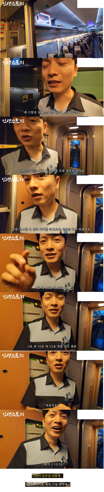
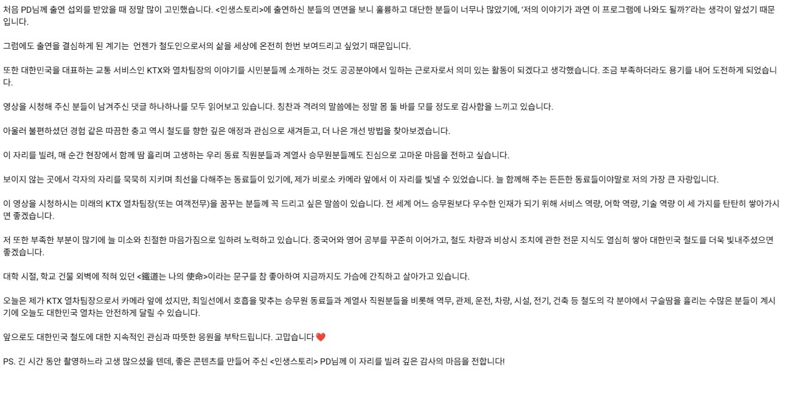

승무원이 알려주는 위치 외우는 법


머리에 각인 완료!
승무원이 알려주는 위치 외우는 법


머리에 각인 완료!
일반열차는 3호차
삶
아 itx 새마을이라 못찾았네
삽시호...한대만 맞아라...
씨...바...ㄹ
사십시오...ㄷㄷ
아닌데요? 사십십오인데요?
1타강사
팔팔네팔 정도로 머리에 쏙 들어오네 ㅋㅋㅋㅋ
헉 합체한거라 못 넘어가잖아
사천일백일십오...
경고합니다. 사십시오.
아뇨아뇨아뇨 엄... 모든 칸에 두시면 되는게 아닌지?
어 40호 칸이 없어요!?!
미남이시네
살아라 벌레같은놈아
사.. 뭐사라구요?
살아라. 벌레같은놈!
네? 야노시호요?
입구에 aed 위치 기재해놓고 표지판도 만들어야하는뎅
칸수에 비해 너무 적지 않나?
칸당 1개씩 비치해도 문제없을텐데 왜 3칸에만 두지?
이런 젠장 돈 주고 사야 쓸 수 있구나 (아님)
한라산 1950m
한번(1) 구경(9) 오십 (50) 시오
하지만 gps재측정이후로
1950이 아니라 1946으로 정상화 당했을거다
디지십시오
씨발 다 살려낼거니까
알쓸신잡
재세동기는 심정지환자에게 의미가 없다
리듬꼬인 박동을 리셋시켜줄뿐 멈춘심장을 뛰게할순없다
심실무수축까지 가면 어차피 답이없고 기도메타밖에 없음
심정지 중에서도 심실세동이나 빈맥같은 타입을 해결해주는거지
사십시오(유료)
원래 삶이란 유료 구독 서비스임
영포티오
아뿔싸 산천 이었구나